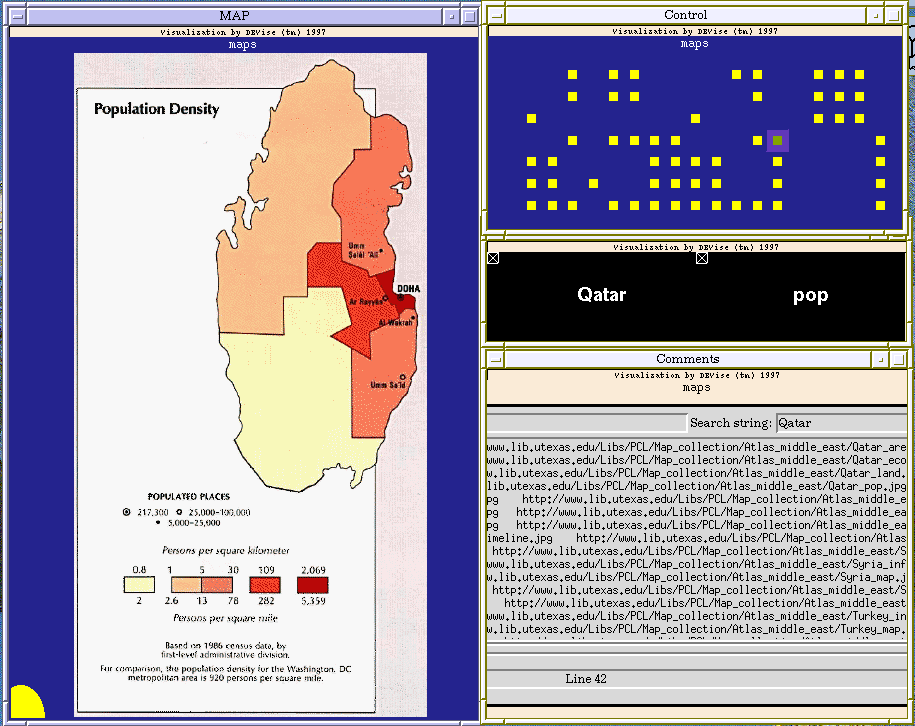

Mideast Maps Example

Input Data
The input data:
- consists of a list of maps (JPEG images), with information about each
map such as the type of map and the country shown on the map.
The input file looks like:
Bahrain area /p/devise/demo/dat/Maps/Bahrain_area.jpg http://www.lib.utexas.edu/Libs/PCL/Map_collection/Atlas_middle_east/Bahrain_area.jpg 98 -0.5 -0.5 /p/devise/demo/dat/Maps/comments
Bahrain econ /p/devise/demo/dat/Maps/Bahrain_econ.jpg http://www.lib.utexas.edu/Libs/PCL/Map_collection/Atlas_middle_east/Bahrain_econ.jpg 100 -0.5 -0.5 /p/devise/demo/dat/Maps/comments
...
Problem
We have a number of maps of mideastern countries. For most of the countries
there are several different maps, such as population density and land use.
We want to be able to view the maps easily.
Visualization
Click here to see our model of creating
visualizations.
The visualization is created as follows:
- Define the 'MAP' window and its view (with country as the X axis and
map type as the Y axis, both with offsets to account for the size of
the map). The shape type is Image.
- Define the 'Control' window and its view (with country as the X axis
and map type as the Y axis).
- Define the 'OverView' window (the one with 'Qatar' and 'pop' in it)
and its views. Both views have country as the X axis and map type as
the Y axis, and in both the symbol type is Text Label. The only difference
is that in the left view the text for the label is country and in
the right view the text is map type.
- Define the 'Comments' window and its view. This view draws its symbol
at a fixed position. The symbol type is Tcl/Tk Window.
- Create an X-Y cursor from the view in the 'MAP' window to the view in
the 'Control' window.
- Create an X-Y link between the view in the 'MAP' window and the views in
the 'OverView' window.
- Create a record link from the view in the 'MAP' window to the view in
the 'Comments' window. This link allows the Tcl script in the 'Comments'
window to display information about the map that is shown in the 'MAP'
window.
Observations
You can select the map to view by clicking in the 'Control' window. When
you select a map, the country and type of map are shown in the 'OverView'
window. Comments about that map are shown in the 'Comments' window.
Back to DEVise home page.